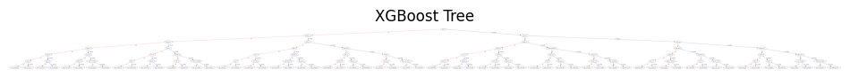

Kaggle 2025 NCAA三月疯狂篮球锦标赛预测
2025年2月10日
项目概述
基于历史球队统计数据和当前赛季滚动表现指标，使用XGBoost梯度提升模型预测NCAA男子篮球锦标赛比赛结果，最终模型准确性在3004队中排行于34%百分位。
数据来源
- 数据来源
- 时间范围：2003-2024
- 包含所有常规赛和季后赛比分以及得分，篮板，抢断等比赛数据

特征工程
- 将两队各项数据转化为差值，减少模型参数以及提升数据信息含量
- 计算球队统计指标的滚动平均值以量化球队状态
模型方法
- 模型: XGBoost
- 决策树类模型能良好模拟非线形关系，并且能自动筛选最有价值的特征
主要发现
- 常规赛表现与季后赛赛表现存在显著差异
- 模型在不同季后赛结构下表现一致
- 模型倾向于支持统计上的优势球队，因此面对球队爆冷情况预测准确率偏低
- 对当年季后赛的预测准确率达到Brier Score = 0.19，具有较高的准确率
未来改进方向
- 数据仅收集了球队层面的统计而并未精细到球员，颗粒度较高
- 决策树类模型相比LSTM和CNN等对时间层面的数据关系挖掘不足